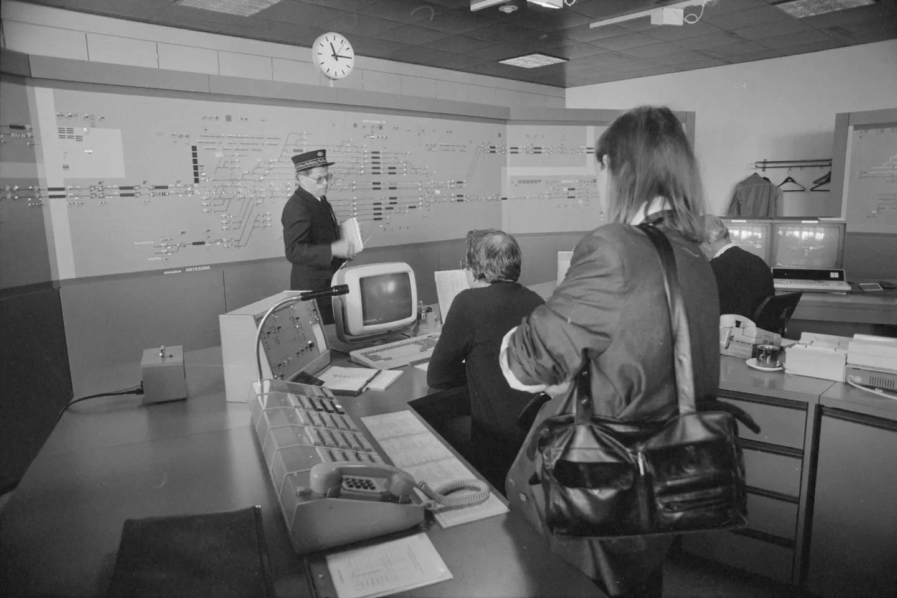

Signalhain
Ein Rätselspiel über ein Stellwerk am Ende der Strecke.
Hain ist ein kleiner Bahnhof in den Bergen, mit zwei Gleisen, einem Ladegleis und zehn Hebeln. Jeden Morgen kommen Züge aus beiden Richtungen, aber auf der eingleisigen Strecke hat immer nur einer Platz. Du stellst Weichen und Signale so, dass alle durchkommen. Nebenbei liest du im alten Fahrtenbuch, warum dein Vorgänger 1953 so plötzlich gegangen ist.
Für Windows, macOS und Linux. Empfohlen ab 10 Jahren.
14,90 €
Preis inkl. 20 % USt. Kein Abo, kein Konto, keine In-App-Käufe. Die Demo enthält die ersten 8 Stufen.

Was im Spiel drin ist
- 48 Stufen in vier Fahrplanperioden (1953, 1961, 1972, 1989)
- Formsignale, mechanische Weichen, später Lichtsignale
- Eine Geschichte, die im Fahrtenbuch des Stellwerks erzählt wird
- Modus „Freies Stellen“: eigene Bahnhöfe bauen und als Datei teilen
- Kein Zeitdruck, die Uhr im Stellwerk lässt sich anhalten
Video
So sieht das aus, was du im Spiel steuerst: Formsignale am Bahnhof Nemotice in Tschechien, die noch heute von Hand gestellt werden (24 Sekunden, nur Umgebungston). Untertitel beschreiben die Geräusche. Mit dem Knopf „Audiodeskription“ liest dein Browser vor, was im Bild passiert.
Textfassung des Videos
Ein kleiner Bahnhof an einem bewölkten Sommertag. Im Vordergrund liegen mehrere Gleise, dahinter Büsche und ein Stellwerkshäuschen. In der Mitte und rechts stehen drei rot-weiß gestreifte Masten mit Formsignalen. Ein blau-weißer Triebwagenzug fährt links aus dem Bahnhof, der Flügel am linken Signal zeigt dabei schräg nach oben (Fahrt frei). Der Zug wird kleiner und verschwindet am Bildrand. Nach etwa 18 Sekunden fällt der Flügel in die Waagrechte zurück, jetzt zeigen alle drei Signale Halt. Zu hören sind nur Wind und Geräusche vom Bahnhof.
Video: Dmitry Novoklimov, „Diesel railcar Hydra CD 854 202-9 and semaphore signals at Nemotice station“, Wikimedia Commons, CC BY-SA 4.0. Ausschnitt 0:38–1:02, verkleinert, ein- und ausgeblendet (Quelle)
Kaufen
Du kaufst einmal und behältst das Spiel. Was du damit machen darfst, steht in der Lizenz.
Signalhain + Soundtrack (Empfehlung)
Spiel und alle 14 Musikstücke (MP3 und FLAC). 1,90 € günstiger als einzeln.
17,90 €Signalhain
Vollversion, 48 Stufen und freies Stellen. Windows, macOS und Linux in einem Kauf.
14,90 €Soundtrack „Oberhain“
14 Stücke, 41 Minuten.
4,90 €Alle Preise inkl. 20 % österreichischer USt. Bei Kauf aus einem anderen EU-Land gilt die Steuer deines Wohnsitzstaats.
Hörprobe
„Nebel über Oberhain“ aus dem Soundtrack.
Instrumental, 26 Sekunden. Langsame gezupfte Gitarrenmelodie über vier Akkorden, leises Klacken im Takt, am Ende ausgeblendet.
Systemanforderungen
| System | Mindestens |
|---|---|
| Windows | Windows 10 (64 Bit), 4 GB RAM |
| macOS | macOS 12, Intel oder Apple Silicon |
| Linux | x86_64, OpenGL 3.3 |
| Speicher | 600 MB frei |
Häufige Fragen
Brauche ich ein Konto?
Nein. Du bekommst einen Download-Link per E-Mail. Das Spiel funktioniert offline.
Darf ich Videos vom Spiel machen?
Ja, auch mit Werbeeinnahmen. Details in der Lizenz, Punkt 2.
Ist das Spiel barrierefrei?
Teilweise: komplett mit Tastatur spielbar, Signale unterscheiden sich auch durch Form statt nur Farbe, Schrift bis 200 %. Screenreader werden noch nicht unterstützt. Mehr in der Erklärung zur Barrierefreiheit.